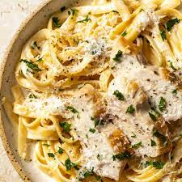

Pasta Recipe

How to make a Fettuccine Chicken Alfredo
ingredients
- ½ pound fettuccine, uncooked
- cooking spray
- 1 pound boneless skinless chicken breasts, cut into strips
- 1 ¼ cups fat-free, reduced-sodium chicken broth
- 4 teaspoons flour
- 4 ounces PHILADELPHIA Neufchatel cheese, cubed
- 3 tablespoons KRAFT Grated Parmesan Cheese, divided
- ¼ teaspoon garlic powder
- ¼ teaspoon pepper
Steps:
- Fill a large pot with lightly salted water and bring to a rolling boil. Cook fettuccine at a boil until tender yet firm to the bite, about 8 minutes. Drain.
- Meanwhile, heat large nonstick skillet sprayed with cooking spray on medium-high heat. Add chicken; cook, stirring occasionally, until chicken is done, 5 to 7 minutes. Remove from the skillet.
- Mix broth and flour into the same skillet. Stir in Neufchâtel cheese, 2 tablespoons Parmesan, garlic powder, and pepper; cook, whisking constantly, until mixture boils and thickens, about 2 minutes. Stir in chicken.
- Place cooked fettuccine in a large serving bowl. Add chicken mixture; toss to coat. Sprinkle with remaining 1 tablespoon Parmesan.